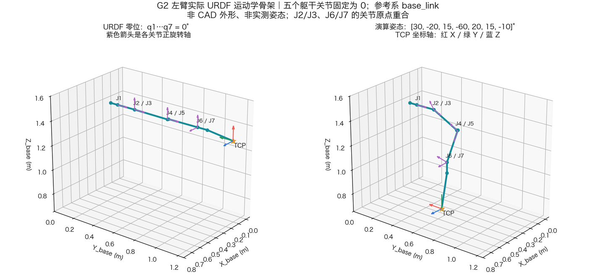
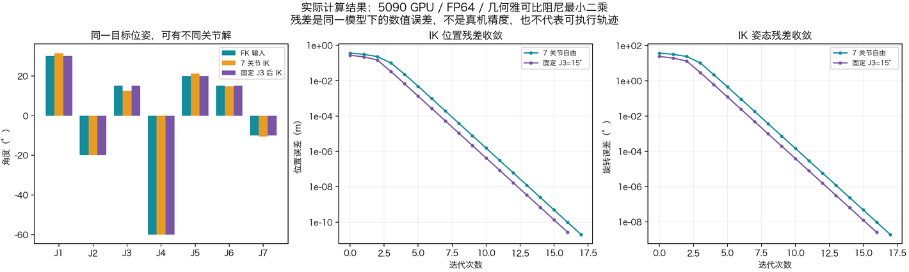

NOTE 27 / 运动学 · FK 与 IK
从 G2 左臂的 7 个关节，一步一步算到 TCP
用真实 URDF 常量，从关节角连乘到末端位姿，再反过来只凭位姿求回关节角。
这次用的是真实的 G2 左臂模型（左 KZ25 / 右 POST），不再用两连杆近似。下面有可拖动关节的 FK 演示、每一级变换矩阵，以及实际跑出来的 IK 结果。
这次使用 G2 左 KZ25 / 右 POST 模型，不再使用两连杆替代。下面既有可拖动关节的 FK 演示，也有实际 GPU IK 结果和每一级变换矩阵。
数据来源：内部工作区的一份锁定模型资产；算法与资产各有独立提交，工作区检出与锁定值不同，本页一律使用锁定文件，不修改工作区。没有连接机器人、没有下发运动指令，也未核验任何一台机器人的当前安装版本。
1．先明确参考系与“零位”
参考系是 base_link。本例把底盘虚拟坐标和五个躯干关节都设为 0，左臂角度按模型顺序排列。不是实时反馈，不是指定站立姿态，也不是让机器人执行全零。
URDF 中的 joint origin 描述“父 link 到关节零位坐标系”的固定安装变换。q=0 时，child link 与这个关节零位坐标系对齐；q≠0 时，再绕 axis 指定的局部轴按右手定则旋转。模型零位不等于原始编码器读数 0，硬件零偏需要控制/标定链说明，不能从 URDF 猜测。
左臂 7 个 axis 都是 [0,0,1]。这表示各自坐标系的 Z 轴。父级运动和安装旋转会改变该轴在 base_link 中的方向。
关节 i 的变换： T_parent_child(q_i) = Trans(xyz_i) · Rz(yaw_i) · Ry(pitch_i) · Rx(roll_i) · Rz(q_i) RPY 是固定安装角；q_i 是关节变量。两者不能混为一谈。 正方向：右手拇指沿局部 +Z，四指弯曲方向为 q_i 增大方向。

2．七个关节的实际安装数据
xyz 单位为 mm；RPY 使用源文件的 rad，保留 1.5708，计算不擅自替换为精确 π/2。最后一列只是 URDF 单关节限位，不是完整可执行性检查。
| 关节 | 父 / 子坐标系 | origin xyz (mm) | origin RPY (rad) | 局部 axis | 全零时 axis 在 base_link | 限位 (°) |
|---|---|---|---|---|---|---|
J1arm_l_joint1 | arm_base_link → arm_l_link1 | [0.0, 0.0, 69.0] | [0.0000000, 0.0000000, 0.0000000] | [0,0,1] | [0.000000, 1.000000, 0.000000] | -176.00 … 176.00 |
J2arm_l_joint2 | arm_l_link1 → arm_l_link2 | [0.0, 0.0, 174.5] | [1.5708000, 0.0000000, 0.0000000] | [0,0,1] | [0.000000, -0.000004, 1.000000] | -118.00 … 118.00 |
J3arm_l_joint3 | arm_l_link2 → arm_l_link3 | [0.0, 0.0, 0.0] | [-1.5708000, 0.0000000, 0.0000000] | [0,0,1] | [0.000000, 1.000000, 0.000000] | -176.00 … 176.00 |
J4arm_l_joint4 | arm_l_link3 → arm_l_link4 | [10.5, 0.0, 332.0] | [1.5708000, 0.0000000, 0.0000000] | [0,0,1] | [0.000000, -0.000004, 1.000000] | -143.00 … 58.00 |
J5arm_l_joint5 | arm_l_link4 → arm_l_link5 | [-10.5, 0.0, 0.0] | [-1.5708000, 0.0000000, 0.0000000] | [0,0,1] | [0.000000, 1.000000, 0.000000] | -176.00 … 176.00 |
J6arm_l_joint6 | arm_l_link5 → arm_l_link6 | [0.0, 0.0, 278.0] | [1.5708000, 0.0000000, 0.0000000] | [0,0,1] | [0.000000, -0.000004, 1.000000] | -58.00 … 58.00 |
J7arm_l_joint7 | arm_l_link6 → arm_l_link7 | [0.0, 0.0, 0.0] | [1.5708000, 0.0000000, 1.5708000] | [0,0,1] | [1.000000, 0.000004, -0.000004] | -88.00 … 88.00 |
在这份 profile 的全状态向量中，左臂为零基索引 8…14；arm_l_joint1…7 是关节名称，不是数组索引。
所以全零时可近似记为：J1 +Y、J2 +Z、J3 +Y、J4 +Z、J5 +Y、J6 +Z、J7 +X。注意这个简记只适用于本例的全零基准，关节运动后不能继续把这些轴当作固定世界轴。
J2 与 J3 原点重合，J6 与 J7 原点重合；它们的旋转轴不同。原点重合不等于同一个自由度。J4 与 J5 则还有 10.5 mm 安装偏移。
3．自己拖动关节：立即看到 FK 变化
这是同一份 URDF 常量的浏览器离线 FK。选中一个关节可显示它的局部 XYZ 三轴；红 X、绿 Y、蓝 Z；关节的局部 Z 就是正旋转轴。所有按钮只更新页面，不连接任何设备。
以 base_link 方向绘制；图像是运动学骨架投影，不是碰撞几何。更改滑块只做 FK，不会自动执行 IK。
4．选定这一组关节角，逐级相乘
q_deg = [30, -20, 15, -60, 20, 15, -10] q_rad = [0.523598776, -0.349065850, 0.261799388, -1.047197551, 0.349065850, 0.261799388, -0.174532925]
五个躯干关节为零时，先得到共同的臂座变换：
T_base_arm_base = 1.000000000 0.000000000 0.000000000 0.102000000 0.000000000 0.000000000 1.000000000 0.000000000 0.000000000 -1.000000000 0.000000000 1.341500000 0.000000000 0.000000000 0.000000000 1.000000000
接着按 J1→J7 连乘，最后再经过腕部和夹爪固定变换。J1 的旋转不会移动它自己的原点，但会旋转后续坐标系；本模型 J2 的安装位移沿 J1 旋转轴，因此只改变 J1 时，J2 原点也不移动。这些都可以在滑块图中验证。
T_base_tcp = T_base_arm_base · A1(q1) · A2(q2) · … · A7(q7)
· T_link7_wrist · T_wrist_gripper · T_gripper_tcp下面每一项均来自实际计算，可展开看完整 4×4 矩阵。矩阵右上角是位置，左上角的三列分别是该坐标系的 X、Y、Z 轴在 base_link 中的方向。
arm_base_link：位置 [0.102000, 0.000000, 1.341500] m
1.000000000 0.000000000 0.000000000 0.102000000 0.000000000 0.000000000 1.000000000 0.000000000 0.000000000 -1.000000000 0.000000000 1.341500000 0.000000000 0.000000000 0.000000000 1.000000000
arm_l_link1：位置 [0.102000, 0.069000, 1.341500] m
0.866025404 -0.500000000 0.000000000 0.102000000 0.000000000 0.000000000 1.000000000 0.069000000 -0.500000000 -0.866025404 0.000000000 1.341500000 0.000000000 0.000000000 0.000000000 1.000000000
arm_l_link2：位置 [0.102000, 0.243500, 1.341500] m
0.813797053 0.296199859 0.500000000 0.102000000 -0.342020143 0.939692621 -0.000003673 0.243500000 -0.469847398 -0.171007082 0.866025404 1.341500000 0.000000000 0.000000000 0.000000000 1.000000000
arm_l_link3：位置 [0.102000, 0.243500, 1.341500] m
0.656657787 -0.693590140 0.296198022 0.102000000 -0.330366032 0.088521541 0.939692621 0.243500000 -0.677981442 -0.714910242 -0.171010264 1.341500000 0.000000000 0.000000000 0.000000000 1.000000000
arm_l_link4：位置 [0.207233, 0.552009, 1.277606] m
0.071811676 0.716782610 0.693589052 0.207232650 -0.978980416 0.183740771 -0.088524993 0.552009107 -0.190893763 -0.672652971 0.714910870 1.277605787 0.000000000 0.000000000 0.000000000 1.000000000
arm_l_link5：位置 [0.206479, 0.562288, 1.279610] m
-0.169741426 -0.676324028 0.716780062 0.206478627 -0.889663573 0.418016670 0.183741097 0.562288401 -0.423894533 -0.606504635 -0.672655597 1.279610172 0.000000000 0.000000000 0.000000000 1.000000000
arm_l_link6：位置 [0.405743, 0.613368, 1.092612] m
0.021559347 0.736291087 0.676321395 0.405743485 -0.811793724 0.407740664 -0.418017345 0.613368426 -0.583546180 -0.540021283 0.606507106 1.092611916 0.000000000 0.000000000 0.000000000 1.000000000
arm_l_link7：位置 [0.405743, 0.613368, 1.092612] m
0.607663102 0.793902223 0.021559567 0.405743485 0.474137571 -0.340865718 -0.811790691 0.613368426 -0.637133517 0.503517450 -0.583550391 1.092611916 0.000000000 0.000000000 0.000000000 1.000000000
arm_l_end_link：位置 [0.460433, 0.656041, 1.035270] m
0.021559567 -0.793902223 0.607663102 0.460433164 -0.811790691 0.340865718 0.474137571 0.656040807 -0.583550391 -0.503517450 -0.637133517 1.035269899 0.000000000 0.000000000 0.000000000 1.000000000
dex1c_l_gripper_base_link：位置 [0.459193, 0.655898, 1.037138] m
0.793902223 -0.607663102 0.021559567 0.459193110 -0.340865718 -0.474137571 -0.811790691 0.655897821 0.503517450 0.637133517 -0.583550391 1.037137819 0.000000000 0.000000000 0.000000000 1.000000000
left_tcp：位置 [0.629623, 0.738335, 0.824220] m
0.793902223 -0.607663102 0.021559567 0.629622560 -0.340865718 -0.474137571 -0.811790691 0.738335335 0.503517450 0.637133517 -0.583550391 0.824219949 0.000000000 0.000000000 0.000000000 1.000000000
5．腕部还不是 TCP：不能漏掉固定工具变换
arm_l_link7 → arm_l_end_link：位移 [0.09,0,0] m，RPY=[π,-π/2,0]。之后还有腕部→夹爪安装座、安装座→left_tcp 两级固定变换。本模型合成后的腕部→TCP 矩阵为：
0.000000000 0.000000000 1.000000000 0.060000000 -1.000000000 0.000000000 0.000000000 -0.000001122 0.000000000 -1.000000000 0.000000000 0.276296078 0.000000000 0.000000000 0.000000000 1.000000000
这表示 TCP 原点在腕部坐标中约为 [60.000, -0.001122, 276.296078] mm；同时坐标轴也旋转了。必须计算 p_tcp = p_wrist + R_wrist · p_wrist_tcp，不能把这三个偏移直接加到基座坐标。
本次 FK 最终结果
T_base_tcp = 0.793902223 -0.607663102 0.021559567 0.629622560 -0.340865718 -0.474137571 -0.811790691 0.738335335 0.503517450 0.637133517 -0.583550391 0.824219949 0.000000000 0.000000000 0.000000000 1.000000000 position_m = [0.629622560, 0.738335335, 0.824219949] quaternion_xyzw = [0.844332604, -0.280851650, 0.155471024, 0.429014644] RPY_deg (Rz·Ry·Rx) = [132.486559, -30.232987, -23.236498]
独立 MuJoCo FK 对照：4×4 矩阵最大绝对差 7.77e-16。MuJoCo 使用同源安装参数构建的无网格运动学链；验证的是变换实现一致性，不验证原始机械标定是否准确。
6．反过来做 IK：只给刚才的末端位姿
目标使用上述完整位置和朝向。初值故意选择不同的关节角：[20.0, -10.0, 0.0, -45.0, 10.0, 5.0, 0.0]°，没有把原 FK 输入当作答案直接返回。
本课单独实现几何雅可比阻尼最小二乘，全部迭代在 单卡 GPU 上进行。它用于展示 7 关节 IK 的机制，不是 生产用的 cuRobo 轨迹优化器，也没有运行碰撞、质心和轨迹验收。
e_p = p_target - p_current
e_R = Log(R_target · R_currentᵀ) # 在基座坐标表达的旋转误差
每个旋转关节 i 的雅可比列：
J_i = [ a_i × (p_tcp - o_i) ] # 位置如何随关节小变化而变化
[ a_i ] # 姿态如何随关节小变化而变化
J 是 6×7，Δq = Jᵀ (J Jᵀ + λ² I)⁻¹ e
本例 λ=1e-4；单轮最大 |Δq_i| 限制为 0.15 rad 后乘 0.8；再检查单关节上下界。先让 7 个关节都参与，再补做“固定 J3=15°”的对照。固定 J3 时从雅可比中移除该列，其有效初值也把 J3 设为 15°，其余初值不变。
| 关节 | FK 原角度 ° | 7 自由度 IK 初值 ° | 7 自由度 IK 解 ° | 固定 J3 后 IK 解 ° |
|---|---|---|---|---|
| J1 | 30.000000 | 20.000000 | 31.518978 | 30.000000 |
| J2 | -20.000000 | -10.000000 | -19.873102 | -20.000000 |
| J3 | 15.000000 | 0.000000 | 12.531366 | 15.000000 |
| J4 | -60.000000 | -45.000000 | -60.000000 | -60.000000 |
| J5 | 20.000000 | 10.000000 | 21.140121 | 20.000000 |
| J6 | 15.000000 | 5.000000 | 14.777022 | 15.000000 |
| J7 | -10.000000 | 0.000000 | -10.614792 | -10.000000 |
7 自由度求解：17 次更新，位置残差 1.99e-11 m，旋转残差 1.9e-09°。固定 J3：16 次更新，恢复原角度附近的解。
本例 6×7 雅可比秩为 6，局部有一个冗余方向。相同 6D 末端位姿可以对应不同的 7 维关节组合。它不保证每个目标都有解，也不保证固定任意一个关节后一定能解出。

7．可复现材料与边界
本页展示的是最终结果；完整的 FK / IK 脚本、MuJoCo 对照链与逐次迭代记录保留在内部报告里，未随本页发布。
远端输出目录：内部输出目录；执行镜像 内部开发镜像，GPU RTX GPU 工作站。脚本不导入 SDK、ROS，不连接机器人。
小数值残差只说明“同一模型内部，目标和解一致”。未检验实机零偏、机械装配误差、工具标定误差、碰撞、质心、关节耦合和可执行路径。不要把本例角度当作运动指令。
URDF 校验和（SHA256 前 16 位）：b52a0c973616739a
本例没有更新或切换远端工作区，没有部署。
相关笔记：机器人运动学（关节到末端的整体框架） · 手眼标定（相机与末端的固定变换） · 机器人标定（为什么模型零位不等于编码器零位） · 碰撞包络